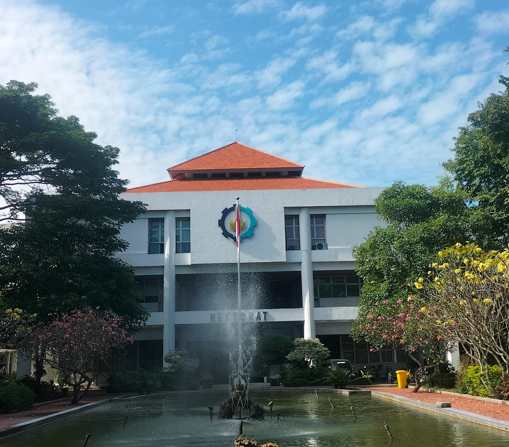

Saat ini saya sedang menempuh pendidikan di Institut Teknologi Sepuluh Nopember. Saya merupakan mahasiswa dari departemen Teknik Komputer dan saat ini merupakan semester awal saya disini. Saya bangga menjadi bagian dari Kampus Ibu Yang Luhur ini.
Tentang ITSKurang lebih sudah 14 tahun lebih saya bersekolah mulai dari Taman Kanak Kanak hingga Sekarang. Nah, Kemana saja sih saya selama ini mengenyam pendidikan